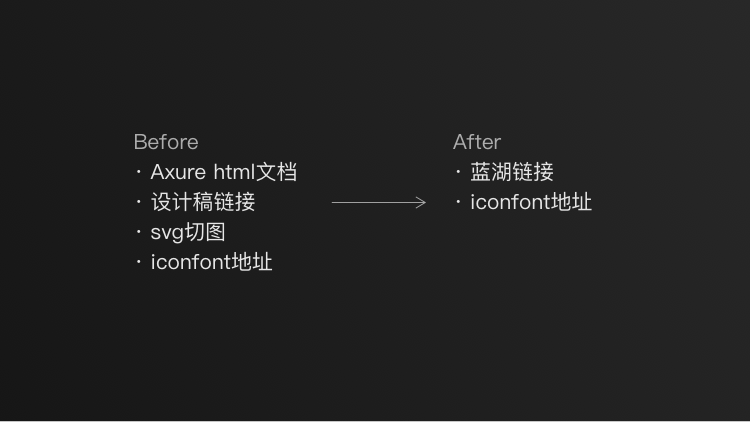

毕业一年，聊聊设计
毕业将近一年，也不算是“新人”了，可能设计技法上仍然略显稚嫩，但是我想思维上应该比原来更精进一些。
在技法上，我在不断的找时间去学习；在思维上，需要平时多思考&阅读。
最近看了印叔的一篇专访，很有感触，所以自己思考总结了下。
对于一名设计师来说，如何成长？
界面的设计应该是一名设计师的基本功，但是这还远远不够。设计应该是一种思维，一种解决问题的能力。需要站在业务的核心地带，由价值驱动。
有时候做事不用想太多，只要有价值，就可以去学习，然后推进；我有时候喜欢看一些金融类的书，这个就很有意思，因为可以让我更好地理解“价值”的含义。
对当下环境的洞察和判断力，以及落地实施的驱动力和影响力，才是能让职业路径螺旋上升的核心能力，同时也为拓宽边界、培养复合型能力奠定了基础。
设计师设计团队的上限
设计师的个人设计水平，决定了设计师本人的下限，而思维的转变才是决定设计师的上限。
如果设计团队狭义的局限在视觉、交互、需求层面，那么天花板显而易见。
这就像是金融市场里面的估值，如果单纯是一个电商，那就算做到最大其实估值也有限，况且前方已经有这么多的对手；但如果不单单是电商，还有Iot云计算等，那么留给市场的想象力就会更大，PE估值就会更高。
所以我想说的是，如果团队能接触到的有意义事越多，那么这个团队就越有价值————总的来说，就是要接触到业务核心层为其赋能。
设计师应该走出自己的安逸圈，主动深入业务，才能突破职业瓶颈。
团队内，也要让自己看到自己对应的层级，这样就可以让自己看到自己上升的空间和对应的利益。
只有自己付出代价和牺牲，才能渴求回报。
设计师的自我提升
理解业务
入行几年后，大家的水平应该都差不大多。这个时候，反倒更应该去理解所在企业的业务————业务体系、商业模型、市场环境，结合这些再落到设计产出中，这才是一位优秀的设计师应该做的。
而现在工作给我的感觉是，我要做系统的某一个部分，所以我去了解这一部分，然后针对其进行设计。
当然，里面有一些现实的原因在里面，因为到我们这个环节只能这么做，但其实做到最好，只能说过得去。
理想的来说，应该在项目伊始就树立一个全局观，有一个类似于树状图之类的框架、项目背景等信息，这样就可以让每个人更好的从大局来理解项目。并且这样也可以把设计做得更好。
我很抱歉，这些点我自己还没有做到，但我会尽力push myself to do it.
全链路设计师
这几年一直常说“全栈设计师”“全链路设计师”，但是技能上的完整并不是其核心价值（技能每个人花时间都可以学），而是应该从商业上进行考量：
关注线上到线下全角色全触点的完整闭环，理解商业链路中相邻节点间所有关系及互动。
这确实有点难，但这应该是每一个设计师致力于的方向。
我们平时不用太拘泥于眼下的视觉表现力、工具、环境，这些都会给自己套上枷锁走偏，真正层面上应该向着“商业”靠近。
我特别喜欢Jobs的一句话：“Stay foolish, stay hungry.”
按照目前的境遇，我没办法对每一个项目做比较深的调研、跟踪，但是这一定是以后的一个趋势，因为不这么干，那么路就越走越窄。
正所谓“在流水婉转处能耐住寂寞，在惊涛骇浪时能跃于其上”，博观而约取，厚积薄发。
团队的高效
在我看来，团队必须高效，天天拧螺丝枯燥的事儿谁都不愿意干。
而高效有很多个层面例如：工作流程、方法论、工具等。
工作流程
在我看来，设计师应该尽早的进入到流程中来。
例如，现在的流程是，需求➡️交互➡️UI➡️开发。有时候为了赶时间，甚至直接交互➡️开发。这么看来，有活干，但团队的整体提升不是最大。
其实这不算是一种最优的解决方案，最好平时就多和客户聊聊天，了解业务实际上怎样的，主动发现其中的不足之处（需求），然后为之提供解决方案，这样一来，我们不仅从设计上占据了主动，了解了实际的商业需求痛点，而且从商业上来说，也是一种共赢的举措。
同样的，做完项目第一期之后，应该有人主动去跟踪客户的业务，而不是等着客户的反馈。
只有尽早的介入项目，了解产品的整体全貌，才能够给出足够完整的解决方案，才能够尽可能提升效率提高质量。1
关键词：主动发现问题、深入了解业务
并且，这里的效率并不单单是我们团队的效率，更重要的是整个产品的效率。作为外包合作方， 让整个产品的效率提升了，不也正是我们的价值所在吗？
这就是“关注线上到线下全角色全触点的完整闭环，理解商业链路中相邻节点间所有关系及互动。”
设计工具
从我自身来说，我特别热衷于寻找新的工具以此提高效率。
例如，通过我们现在不断的优化，现在使用了最高效的方法———交互稿和设计稿使用蓝湖进行自动同步更新链接（前两天刚使用上这个方法），并且还有版本控制的功能。这样一来，对于交互、UI、开发都大有裨益，省去了不少的时间。
以往是axure生成的文件发给ui和前端，ui做完的图导出至墨刀，在实际工作流中比较麻烦。

在sketch中使用各种插件，来节约我们时间。PS中甚至有图表的插件，从此数据可视化就轻松了很多。
团队中每个人都建立起上下游的高效协作，让每个人都不去做繁杂的事。
To the end of the world
作为一名设计人员，应当开拓自己的眼界，不单单是视觉表现技法，而是一种对于世界的眼界与格局。
我很幸运，身边有不少喜欢读书的人，所以我也潜移默化了一些。Thanks@echo,honghai
世界变化太快，我们都很渺小。所以拥抱变化，努力思考学习，才是唯一的方式。
“为行业做赋能”这个话太大了，尽可能为设计、为自己所在的团队多思考一些吧～